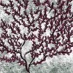
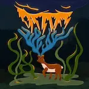
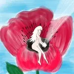
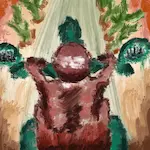
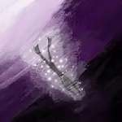

2025
Mai

Avril
- 19 — Essai à la guitare 🎶
-
15 —
Livres jeunesse


 Tintin au Tibet (Hergé), Pierre Lapin (Beatrix Potter), ♡ Le mystère du lac (Jason Pamment), La brigade des cauchemars - T.1 Sarah (Franck Thilliez, Yomgui Dumont et Drac), L’atelier d’Agathe et Lola - 2.Tous pour Benji ! (Catherine Kalengula)
Tintin au Tibet (Hergé), Pierre Lapin (Beatrix Potter), ♡ Le mystère du lac (Jason Pamment), La brigade des cauchemars - T.1 Sarah (Franck Thilliez, Yomgui Dumont et Drac), L’atelier d’Agathe et Lola - 2.Tous pour Benji ! (Catherine Kalengula) -
12 —
Comédies, biopics et dystopies


 R.I.P.D. Brigade Fantôme, Bookworm, L’amour dans l’objectif, Paddington au Pérou, La Résidence, Better man, Un parfait inconnu, O’Dessa, Mickey 17
R.I.P.D. Brigade Fantôme, Bookworm, L’amour dans l’objectif, Paddington au Pérou, La Résidence, Better man, Un parfait inconnu, O’Dessa, Mickey 17
Mars
-
16 —
Bandes dessinées, magie et roman beaucoup trop long


 ♡ Louca (Bruno Dequier), Le garçon sorcière (Molly Knox Ostertag), ♡ La maison aux mille détours (Diana Wynne Jones), La diagonale des Reines (Bernard Werber)
♡ Louca (Bruno Dequier), Le garçon sorcière (Molly Knox Ostertag), ♡ La maison aux mille détours (Diana Wynne Jones), La diagonale des Reines (Bernard Werber) -
13 —
Amour, famille et fantômes


 L’Amour ouf, ♡ Melle Bottine, Ghosts (UK)
L’Amour ouf, ♡ Melle Bottine, Ghosts (UK) -
01 —
Grimm, CB Strike, Panda


 ♡ Grimm (intégrale), CB Strike (saison 6), Panda (saison 2)
♡ Grimm (intégrale), CB Strike (saison 6), Panda (saison 2)
Février
-
08 —
💖 Un peu de magie et d’amour en lecture


 ♡ Le Château de Hurle (Diana Wynne Jones), ♡ Le Château des nuages (Diana Wynne Jones), ♡ La fille dans l’écran (Lou Lubie et Manon Desveaux)
♡ Le Château de Hurle (Diana Wynne Jones), ♡ Le Château des nuages (Diana Wynne Jones), ♡ La fille dans l’écran (Lou Lubie et Manon Desveaux) -
04 —
Noël, altruisme, magie, animation, horreur et comédie


 Dear Santa, Un merveilleux Noël en famille, Fêlés, Wicked, Le Seigneur des Anneaux - La guerre des Rohirrim, Flow, ♡ Nosferatu, Le jardinier
Dear Santa, Un merveilleux Noël en famille, Fêlés, Wicked, Le Seigneur des Anneaux - La guerre des Rohirrim, Flow, ♡ Nosferatu, Le jardinier
2024
Décembre
-
22 —
Noël et haute voltige


 ♡ Red One, Spirited - L’Esprit de Noël, Un Noël givré, Noël sous les aurores boréales, ♡ La sœur des neiges, Our little secret, En colo avec ma mère, Cat’s Eyes
♡ Red One, Spirited - L’Esprit de Noël, Un Noël givré, Noël sous les aurores boréales, ♡ La sœur des neiges, Our little secret, En colo avec ma mère, Cat’s Eyes - 15 — Quelques conseils d’un lecteur et d’un auteur pour bien écrire
-
01 —
Dernières lectures


 Le Zèbre (Alexandre Jardin), La vie secrète des animaux (Peter Wohlleben), Guide pratique des habitats alternatifs en France (Toits alternatifs - collectif)
Le Zèbre (Alexandre Jardin), La vie secrète des animaux (Peter Wohlleben), Guide pratique des habitats alternatifs en France (Toits alternatifs - collectif)
Novembre
-
30 —
Comédies romantiques, magie et autres films


 This time next year, Le bal masqué de Noël, Le nombre magique de Noël, The Merry Gentlemen, The portable door, Ellian et le sortilège, Sharper, Veuillez nous excuser pour la gêne occasionnée
This time next year, Le bal masqué de Noël, Le nombre magique de Noël, The Merry Gentlemen, The portable door, Ellian et le sortilège, Sharper, Veuillez nous excuser pour la gêne occasionnée -
10 —
Séries et animés


 ♡ From, Resident alien, Attack on Titan, ♡ Yuru Camp
♡ From, Resident alien, Attack on Titan, ♡ Yuru Camp -
10 —
Comédies


 Loups-garous, Le médium, Paris à tout prix, ♡ Pourquoi tu souris ?, Wolfs
Loups-garous, Le médium, Paris à tout prix, ♡ Pourquoi tu souris ?, Wolfs -
09 —
Poneys de Noël, romance fantastique et vengeance


 Falling inn love, Lettres magiques au Père Noël, Un ami pour Noël, ♡ Stardust - Le mystère de l'Étoile, Le Comte de Monte Cristo, Speak no Evil, Maurice le chat fabuleux, Joker folie à deux
Falling inn love, Lettres magiques au Père Noël, Un ami pour Noël, ♡ Stardust - Le mystère de l'Étoile, Le Comte de Monte Cristo, Speak no Evil, Maurice le chat fabuleux, Joker folie à deux
Octobre
-
29 —
 Les billes du temps, nouvelle
Les billes du temps, nouvelle
-
17 —
Creacover 2024, seconde partie

-
06 —
Poneys de Noël en veux-tu en voilà, douceur fantastique, comédie délirante et action hard core


 Romance écossaise, Un mariage qui fait rêver, L’amour ne s’apprend pas, Le guide du célibataire, We have a ghost, Les Bodin’s enquêtent en Corse, The Crow, The killer
Romance écossaise, Un mariage qui fait rêver, L’amour ne s’apprend pas, Le guide du célibataire, We have a ghost, Les Bodin’s enquêtent en Corse, The Crow, The killer